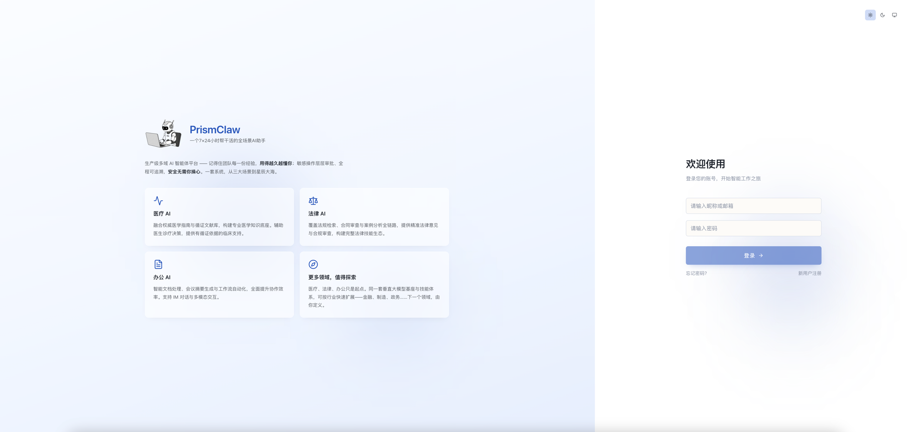
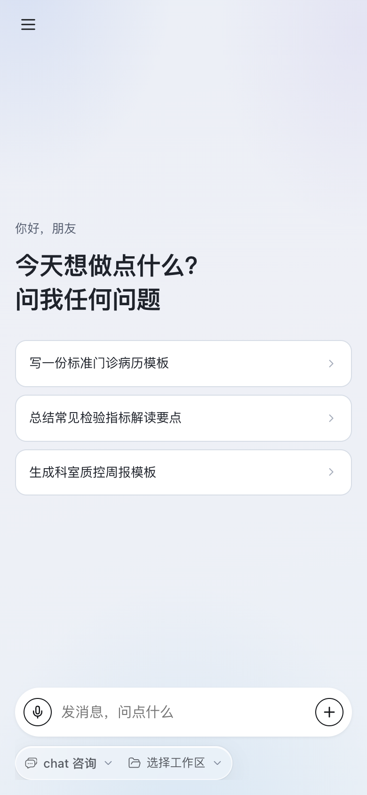
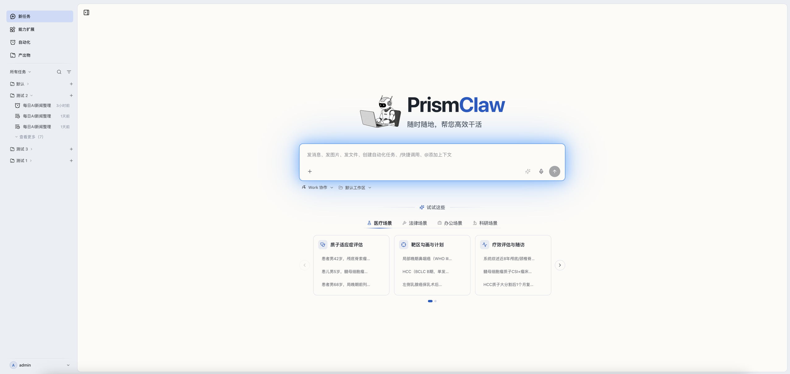
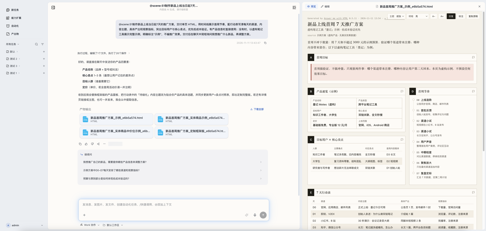
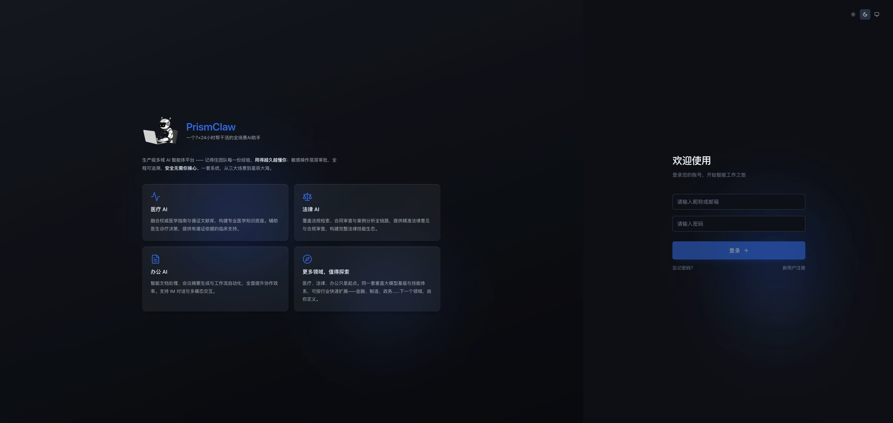
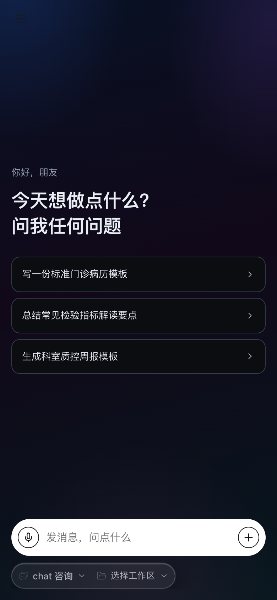
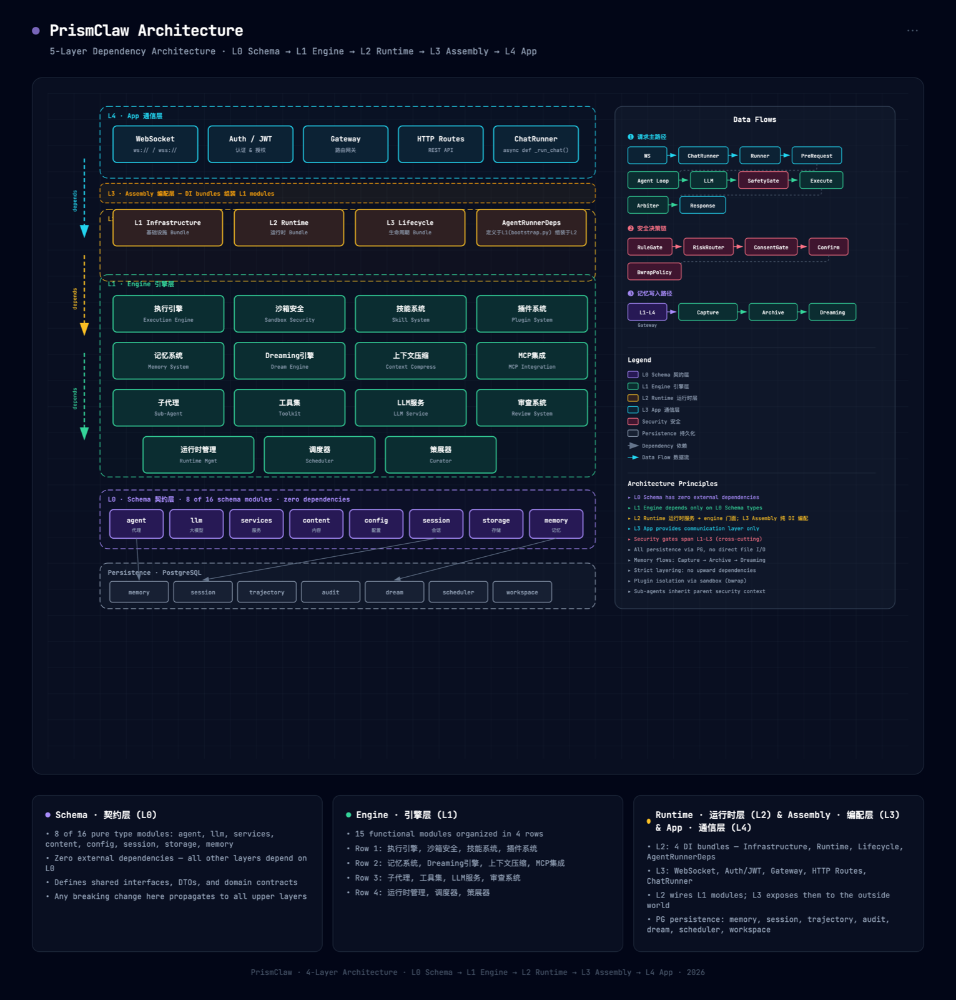

01
医疗 AI
融合权威医学指南与循证文献库，构建专业医学知识底座。辅助医生诊疗决策，提供有循证依据的临床支持。
MEDICAL循证知识库临床决策
PrismClaw 是运行于企业自有基础设施的 AI Agent 平台：员工通过浏览器即可对话、调度工具并产出可交付文件。医疗、法律、办公场景内置，能力按需扩展；敏感操作须审批放行，全程可追溯。


01 / Scenarios
医疗、法律、办公共享同一个垂直大模型基座——不是三个割裂的工具，而是一套可持续扩展的能力底座。
融合权威医学指南与循证文献库，构建专业医学知识底座。辅助医生诊疗决策，提供有循证依据的临床支持。
MEDICAL循证知识库临床决策
覆盖法规检索、合同审查与案例分析全链路，提供精准法律意见与合规审查，构建完整法律技能生态。
LEGAL合同审查合规意见
智能文档处理、会议摘要生成与工作流自动化，全面提升协作效率。支持 IM 对话与多模态交互。
OFFICE文档 × 流程多模态
医疗、法律、办公只是起点。同一套垂直大模型基座与技能体系，可按行业快速扩展——金融、制造、政务……下一个领域，由你定义。
MORE DOMAINS按行业扩展由你定义
02 / Capabilities
从部署、记忆到安全治理，不需要再东拼西凑一堆开源件，也不用为每家企业重写一遍底座。
数据、记忆与审计全部留在企业自有基础设施。模型通过 OpenAI 兼容端点接入，可指向内网自建推理服务，无需外网。
8 份 YAML 配置 + 一条 docker compose up -d。浏览器登录即用，PC 与移动 H5 双端，用户零安装。
schema → engine → runtime → assembly → app，依赖严格单向；app 只能经 runtime.facade 访问引擎，改一处不牵一片。
L1 工作 / L2 会话 / L3 语义（pgvector）/ L4 归档。空闲窗口执行 Light → Deep → REM 三阶段整理，把经验沉淀成可复用的团队记忆。
SafetyGate 五步链、bwrap 内核级沙箱、DLP 与 ConsentGate 全部在服务端强制执行；敏感操作须确认放行，可开启 4-Eyes 双人复核与 MFA，审计日志以 WORM 哈希链留存。
Worker 无状态，Redis 维护 session_key → worker_id 亲和；宕机经 TTL 过期自动接管。技能、插件、MCP、子代理均可插拔。
03 / Workflow
输入框里写清目标，Agent 自主规划步骤、调用技能与工具；产出物在右侧实时预览，确认后直接下载。


04 / Experience
PC 工作台与移动端 H5 共享同一套主题令牌与信息层级：亮色近白冷灰，暗色靛蓝黑。登录、对话、任务、文件、自动化，在两端都在熟悉的位置。
:5173 · H5 :10086 本地预览

05 / Architecture
依赖严格单向：L4 → L3 → L2 → L1 → L0。L1 承载全部业务逻辑且无状态，存储独立于 Worker——这是水平扩展的支点。

交互式图解 ↗WebSocket · Auth · Gateway · HTTP Routes
Bundle 组装：Infrastructure → Runtime → Lifecycle
engine facade · 记忆编排 · 能力刷新 · ChatService
执行 · 沙箱 · 技能 · 插件 · 记忆 · Dreaming · MCP
Protocol + 类型 + 配置
任意数量 Worker 可共享同一套 Redis / PostgreSQL；会话、记忆、向量、审计全部落在企业自有存储，备份与迁移只需管这两处。
06 / Quickstart
Docker 单机起全套：PostgreSQL + Redis + 应用 + Runtime-Agent，首次启动会构建镜像。
# 1 · 生成配置（仓库只提交脱敏模板）
cd backend/configs
for f in *.example.yaml; do cp "$f" "${f%.example.yaml}.yaml"; done
cd ../..
cp deploy/configs/mcp.prod.example.yaml deploy/configs/mcp.prod.yaml
# 2 · 填写部署密钥（PG 密码 / HMAC / MCP token / JWT）
cd deploy && cp .env.example .env && vim .env
# 3 · 一键启动
docker compose up -d
# → 打开 http://<服务器IP>:8000 登录